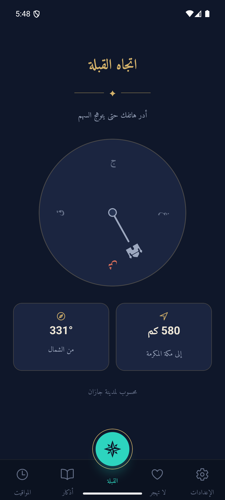
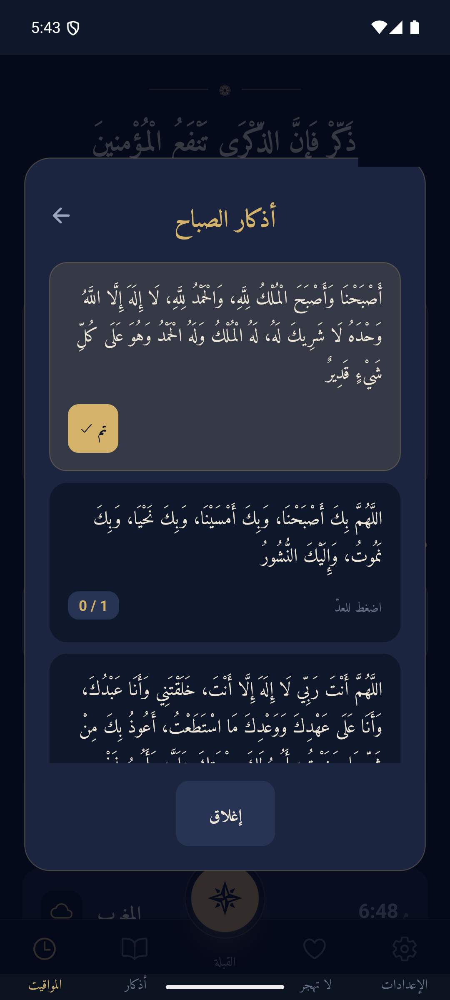
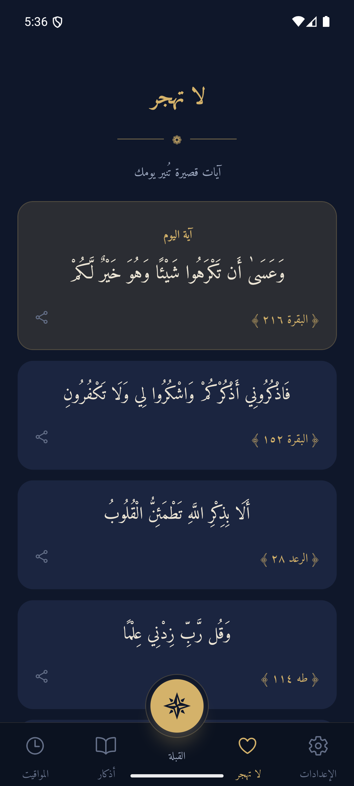
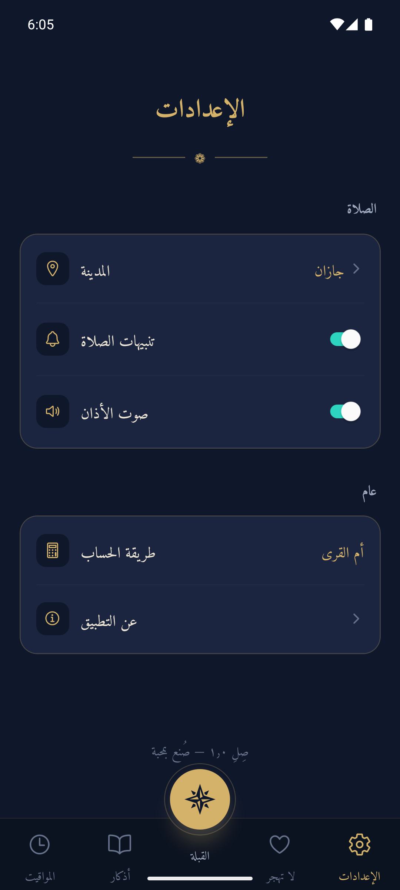
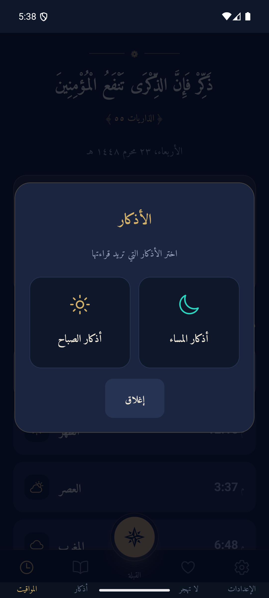

مواقيت اليوم… مباشرة
نفس الحساب الفلكي الذي يعمل داخل التطبيق — يعمل الآن في متصفحك بطريقة أم القرى.
تطبيقٌ واحد… لكل يومك
صُمّم صِلِ ليكون بسيطاً وهادئاً — كل شيء يُحسب على جهازك، ولا شيء يحتاج اتصالاً.
مواقيت تُحسب فلكياً — لا تُجلب من الإنترنت
يحسب صِلِ أوقات الصلوات الخمس على جهازك مباشرة بطريقة أم القرى المعتمدة في المملكة، مع عدّ تنازلي حيّ للصلاة القادمة والتاريخ الهجري. سافرْ أو انقطع اتصالك — المواقيت معك دائماً.
بوصلة حيّة تدلك على مكة
بوصلة تدور مع حركة هاتفك عبر مستشعر المغناطيسية، وسهم يثبت على اتجاه الكعبة أينما درت — مع زاوية الاتجاه بالدرجات والمسافة إلى مكة المكرمة بالكيلومترات.

أذكارك الصباحية والمسائية… بعدّاد
اختر أذكار الصباح أو المساء، ثم اضغط على البطاقة لعدّ التكرار — تتوهج البطاقة ذهبياً عند إتمام العدد الموصى به. عشرون ذكراً من الأذكار الصحيحة الثابتة.

آية اليوم… وآيات لا تُنسى
ركن «لا تهجر» يقدّم آية مختارة كل يوم وخمس عشرة آية قصيرة تبقيك على صلة يومية بالقرآن، مع إمكانية مشاركة أي آية بلمسة واحدة.

مدينتك… وكل شيء يتبعها
اختر مدينتك من ثماني مدن سعودية فتتحدّث المواقيت والقبلة والمسافة في كل التطبيق فوراً — ويحفظ صِلِ اختيارك على جهازك فلا تعيد ضبطه أبداً.

من داخل التطبيق

كيف يعمل صِلِ؟
حسابٌ فلكي
موقع الشمس لموقعك وتاريخك يحدد المواقيت بدقة — رياضيات خالصة تعمل على الجهاز، بطريقة أم القرى.
مستشعر حقيقي
مستشعر المجال المغناطيسي في هاتفك يحدد اتجاهك لحظياً، ويحسب التطبيق زاوية الكعبة من موقعك.
خصوصية كاملة
لا حسابات، لا تتبع، لا خوادم. بياناتك واختياراتك تبقى على جهازك — ويعمل التطبيق كاملاً دون إنترنت.
أسئلة شائعة
هل يحتاج التطبيق إلى إنترنت؟
لا. كل شيء يُحسب على جهازك — المواقيت بالرياضيات الفلكية، والقبلة بمستشعر الهاتف، والأذكار والآيات مخزّنة داخل التطبيق. يعمل صِلِ كاملاً في وضع الطيران.
كيف تُحسب مواقيت الصلاة؟
بطريقة أم القرى المعتمدة في المملكة العربية السعودية، عبر مكتبة adhan التي تحسب موقع الشمس فلكياً لموقعك وتاريخك — وهي نفس الطريقة التي تعمل في هذه الصفحة أعلاه.
هل يجمع التطبيق بياناتي؟
لا حسابات، لا تتبع، لا خوادم. اختيار مدينتك يُحفظ على جهازك فقط، ولا يغادر أي شيء هاتفك.
هل التطبيق مجاني ومفتوح المصدر؟
نعم — الكود كاملاً متاح على GitHub برخصة مفتوحة، ويمكنك تشغيله عبر Expo Go على هاتفك.
ما مدى دقة اتجاه القبلة؟
تُحسب زاوية الكعبة من إحداثيات مدينتك بدقة رياضية، ويعتمد الاتجاه اللحظي على مستشعر المغناطيسية في هاتفك — أبعِد الهاتف عن المعادن وحرّكه على شكل ٨ لمعايرة أفضل.
أَلَا بِذِكْرِ اللَّهِ تَطْمَئِنُّ الْقُلُوبُ